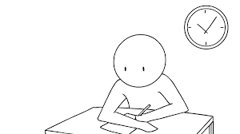

What Does Procrastination Mean to Me?
 I was young when I became a procrastinator. It was just something that kept happening. I was always a hard worker but it was hard work to get my work done before the last minute. It's always very stressful because I know the quality of my work always has the potential to be so much better than it usually is. Even this right here, was done at essentially the last minute. Of course I'm telling myself I have a valid reason this time; I planned on doing it on Thursday but then my electricity went out, and the next day was my busy day and so here I am on Saturday morning doing the work that's due tomorrow.
So what does procrastination mean to me? Well, it means a few sleepless night, it means calling up friends at the last minute for help if I don't understand something, it means having anxiety attacks when I feel like I may not finish in time, it means sometimes actually not finishing work and having to deal with the shame and the consequences. Yay me! (rolls eyes). To make matters worse, I'm a perfectionist... so you can only imagine.
My Journey Through University
Looking back, I probably didn't expect my University life to be quite like it is now. I've had many journeys, many ups and downs... and boy how down those downs have been. I remember my first year and having the chance to do most of my courses with my best friend Brian Brooks (he's an Actuarial Science Major). That, however soon became less and less as the semesters went by. Now in final year, we have no like courses. The lack of him in my classes forced me to make new friends, which turned out better than I expected. I really hope to leave this University feeling accomplished, despite all the difficult times.
All in all, I'm truly grateful for all my experiences. I've made lifelong friends, I've encountered unforgettable beings like Dr. Carl Beckford, Dr. Kirk Morgan and now Mr. Yannick Lyn Fatt (just to name a few). I know that who I am today has as much to do with my experiences here at UWI as it does with my experiences prior. I'm really excited, scared, worried and somehow still very hopeful about what my future has in store.